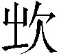

话说薛宝钗道：“到底分个次序，让我写出来。”说着，便令众人拈阄为序。起首恰是李氏[2]〔二〕，然后按次各各开出。凤姐儿说道：“既是这样说，我也说一句在上头。”众人都笑说道：“更妙了！”宝钗便将稻香老农之上补了一个“凤”字，李纨又将题目讲与他听。凤姐儿想了半日，笑道：“你们别笑话我。我只有一句粗话，下剩的我就不知道了。”众人都笑道：“越是粗话越好，你说了只管干正事去罢。”凤姐儿笑道：“我想下雪必刮北风。昨夜听见了一夜的北风，我有了一句，就是‘一夜北风紧’，可使得？”众人听了，都相视笑道：“这句虽粗，不见底下的，这正是会作诗的起法。不但好，而且留了多少地步与后人。就是这句为首，稻香老农快写上续下去。”凤姐和李婶平儿又吃了两杯酒，自去了。这里李纨便写了：
一夜北风紧，
自己联道：
开门雪尚飘。
入泥怜洁白，
香菱道：
匝地惜琼瑶[3]。
有意荣枯草，
探春道：
无心饰萎苕[4]。
价高村酿熟[5]，
李绮道：
年稔府粱饶[6]。
葭动灰飞管，
李纹道：
阳回斗转杓[7]。
寒山已失翠，
岫烟道：
冻浦不闻潮。
易挂疏枝柳，
湘云道：
难堆破叶蕉。
麝煤[8]融宝鼎，
宝琴道：
绮袖笼金貂。
光夺窗前镜，
黛玉道：
香粘壁上椒[9]。
斜风仍故故[10]，
宝玉道：
清梦转聊聊[11]。
何处梅花笛[12]？
宝钗道：
谁家碧玉箫？
李纨笑道：“我替你们看热酒去罢。”宝钗命宝琴续联，只见湘云站〔四〕起来道：
龙斗阵云销[16]。
野岸回孤棹，
宝琴也站起道：
吟鞭指灞桥[17]。
赐裘怜抚戍[18]，
湘云那里肯让人，且别人也不如他敏捷，都看他扬眉挺身的说道：
加絮念征徭[19]。
坳垤审夷险[20]，
宝钗连声赞好，也便联道：
枝柯怕动摇。
皑皑轻趁步，
黛玉忙联道：
翦翦舞随腰[21]。
煮芋成新赏，
一面说，一面推宝玉，命他联。宝玉正看宝钗、宝琴、黛玉三人共战湘云，十分有趣，那里还顾得联诗，今见黛玉推他，方联道：
撒盐是旧谣[22]。
苇蓑犹泊钓[23]，
湘云笑道：“你快下去，你不中用，倒耽搁了我。”一面只听宝琴联道：
林斧不闻樵。
伏象千峰凸，
湘云忙联道：
盘蛇一径遥[24]。
花缘经冷聚〔五〕，
宝钗与众人又忙赞好。探春又联道：
色岂畏霜凋[26]。
深院惊寒雀，
湘云正渴了，忙忙的吃茶，已被岫烟联道：
空山泣老鸮[27]。
阶墀随上下，
湘云忙丢了茶杯，忙联道：
池水任浮漂。
照耀临清晓，
黛玉联道：
缤纷入永宵。
诚忘三尺冷，
湘云忙笑联道：
瑞释九重焦[28]。
僵卧谁相问[29]，
宝琴也忙笑联道：
狂游客喜招[30]。
天机断缟带，
湘云又忙道：
林黛玉不容他出，接着便道：
寂寞对台榭，
湘云忙联道：
清贫怀箪瓢[33]。
宝琴也不容情，也忙道：
烹茶冰渐沸，
湘云见这般，自为得趣，又是笑，又忙联道：
煮酒叶难烧。
黛玉也笑道：
没帚山僧扫，
宝琴也笑道：
埋琴稚子挑。
湘云笑的弯了腰，忙念了一句，众人问“到底说的什么？”
湘云喊道：
石楼闲睡鹤，
黛玉笑的握着胸口，高声嚷道：
锦罽暖亲猫。
宝琴也忙笑道：
月窟翻银浪，
湘云忙联道：
霞城隐赤标[34]。
黛玉忙笑道：
沁梅香可嚼[35]，
宝钗笑称好，也忙联道：
淋竹醉堪调。
宝琴也忙道：
或湿鸳鸯带，
湘云忙联道：
时凝翡翠翘[36]。
黛玉又忙道：
无风仍脉脉，
宝琴又忙笑联道：
不雨亦潇潇。
湘云伏着已笑软了。众人看他三人对抢，也都不顾作诗，看着也只是笑。黛玉还推他往下联，又道：“你也有才尽之时。我听听还有什么舌根嚼了！”湘云只伏在宝钗怀里，笑个不住。宝钗推他起来道：“你有本事，把‘二萧’的韵全用完了，我才服你。”湘云起身笑道：“我也不是作诗，竟是抢命呢。”众人笑道：“倒是你说罢。”探春早已料定没有自己联的了，便早写出来，因说：“还没收住呢。”李纨听了，接过来便联了一句道：
欲志今朝乐，
李绮收了一句道：
凭诗祝舜尧。
李纨道：“够了，够了。虽没作完了韵，賸的字〔七〕若生扭用了，倒不好了。”说着，大家来细细评论一回，独湘云的多，都笑道：“这都是那块鹿肉的功劳。”
李纨笑道：“逐句评去都还一气，只是宝玉又落了第了。”宝玉笑道：“我原不会联句，只好担待我罢。”李纨笑道：“也没有社社担待你的。又说韵险了，又整误了，又不会联句了，今日必罚你。我才看见栊翠庵的红梅有趣，我要折一枝来插瓶。可厌妙玉为人，我不理他。如今罚你去取一枝来。”众人都道这罚的又雅又有趣。
宝玉也乐为，答应着就要走。湘云黛玉一齐说道：“外头冷得很，你且吃杯热酒再去。”湘云早执起壶来，黛玉递了一个大杯，满斟了一杯。湘云笑道：“你吃了我们的酒，你要取不来，加倍罚你。”宝玉忙吃一杯，冒雪而去。李纨命人好好跟着。黛玉忙拦说：“不必，有了人反不得了。”李纨点头说：“是。”一面命丫鬟将一个美女耸肩瓶拿来，贮了水准备插梅，因又笑道：“回来该咏红梅了。”
湘云忙道：“我先作一首。”宝钗忙道：“今日断乎不容你再作了。你都抢了去，别人都闲着，也没趣，回来还罚宝玉，他说不会联句，如今就叫他自己作去。”黛玉笑道：“这话很是。我还有个主意，方才联句不够，莫若拣着联的少的人作红梅。”宝钗笑道：“这话是极。方才邢李三位屈才，且又是客。琴儿和颦儿云儿三个人也抢了许多，我们一概都别作，只让他三个作才是。”李纨因说：“绮儿也不大会作，还是让琴妹妹作罢。”宝钗只得依允，又道：“就用‘红梅花’三个字作韵，每人一首七律。邢大妹妹作‘红’字，你们李大妹妹作‘梅’字，琴儿作‘花’字。”李纨道：“饶过宝玉去，我不服。”湘云忙道：“有个好题目命他作。”众人问何题目？湘云道：“命他就作‘访妙玉乞红梅’，岂不有趣？”众人听了，都说有趣。
一语未了，只见宝玉笑

[38]了一枝红梅进来，众丫鬟忙已接过，插入瓶内。众人都笑称谢。宝玉笑道：“你们如今赏罢，也不知费了我多少精神呢。”说着，探春早又递过一钟暖酒来，众丫鬟走上来接了蓑笠掸雪。各人房中丫鬟都添送衣服来，袭人也遣人送了半旧的狐腋褂来。李纨命人将那蒸的大芋头盛了一盘，又将朱橘、黄橙、橄榄等物盛了两盘，命人带与袭人去。湘云且告诉宝玉方才的诗题，又催宝玉快作。宝玉道：“姐姐妹妹们，让我自己用韵罢，别限韵了。”众人都说：“随你作去罢。”一面说，一面大家看梅花。原来这枝梅花只有二尺来高，旁有一横枝纵横而出，约有五六尺长，其间小枝分歧，或如蟠螭，或如僵蚓，或孤削如笔，或密聚如林，花吐胭脂，香欺兰蕙，各各称赏。谁知邢岫烟、李纹、薛宝琴三人都已吟成，各自写了出来。众人便依“红梅花”三字之序看去，写道是：
咏红梅花 得“红”字[39] 邢岫烟
桃未芳菲杏未红，冲寒先已笑东风[40]。
绿萼添妆融宝炬，缟仙扶醉跨残虹[43]。
看来岂是寻常色，浓淡由他冰雪中。
咏红梅花 得“梅”字 李纹
白梅懒赋赋红梅，逞艳先迎醉眼开[44]。
冻脸有痕皆是血，酸心无恨亦成灰[45]。
江北江南春灿烂，寄言蜂蝶漫疑猜[48]。
咏红梅花 得“花”字 薛宝琴
疏是枝条艳是花，春妆儿女竞奢华[49]。
闲庭曲槛无馀雪，流水空山有落霞[50]。
幽梦冷随红袖笛，游仙香泛绛河槎[51]。
前身定是瑶台种，无复相疑色相[52]差。
众人看了，都笑称赏了一番，又指末一首说更好。宝玉见宝琴年纪最小，才又敏捷，深为奇异。黛玉湘云二人斟了一小杯酒，齐贺宝琴。宝钗笑道：“三首各有各好。你们两个天天捉弄厌了我，如今捉弄他来了。”李纨又问宝玉：“你可有了？”宝玉忙道：“我倒有了，才一看见那三首，又吓忘了，等我再想。”湘云听了，便拿了一支铜火箸击着手炉，笑道：“我击鼓[53]了，若鼓绝不成，又要罚的。”宝玉笑道：“我已有了。”黛玉提起笔来，说道：“你念，我写。”湘云便击了一下笑道：“一鼓绝。”宝玉笑道：“有了，你写吧。”众人听他念道：
酒未开樽句未裁，
黛玉写了，摇头笑道：“起的平平。”湘云又道：“快着！”宝玉笑道：
寻春问腊到蓬莱。
黛玉湘云都点头笑道：“有些意思了。”宝玉又道：
不求大士瓶中露，为乞嫦娥槛外梅。[54]
黛玉写了，又摇头道：“凑巧而已。”湘云忙催二鼓，宝玉又笑道：
入世冷挑红雪去，离尘香割紫云来[55]。
黛玉写毕，湘云大家才评论时，只见几个丫鬟跑进来道：“老太太来了。”众人忙迎出来。大家又笑道：“怎么这等高兴！”说着，远远见贾母围了大斗篷，带着灰鼠暖兜[58]，坐着小竹轿，打着青绸油伞，鸳鸯琥珀等五六个丫鬟，每人都是打着伞，拥轿而来。李纨等忙往上迎，贾母命人止住说：“只在那里就是了。”来至跟前，贾母笑道：“我瞒着你太太和凤丫头来了。大雪地下坐着这个无妨，没的叫他们来跴雪。”众人忙一面上前接斗篷，搀扶着，一面答应着。
贾母来至室中，先笑道：“好俊梅花！你们也会乐，我来着了。”说着，李纨早命拿了一个大狼皮褥来铺在当中。贾母坐了，因笑道：“你们只管顽笑吃喝。我因为天短了，不敢睡中觉，抹了一回牌，想起你们来了，我也来凑个趣儿。”李纨早又捧过手炉来，探春另拿了一副杯箸来，亲自斟了暖酒，奉与贾母。贾母便饮了一口，问那个盘子里是什么东西。众人忙捧了过来，回说是糟鹌鹑。贾母道：“这倒罢了，撕一两点腿子来。”李纨忙答应了，要水洗手，亲自来撕。贾母又道：“你们仍旧坐下说笑我听。”又命李纨：“你也坐下，就如同我没来的一样才好，不然我就去了。”
众人听了，方依次坐下。只李纨便挪到尽下边。贾母因问作何事了，众人便说作诗。贾母道：“有作诗的，不如作些灯谜，大家正月里好玩。”众人答应了。说笑了一回，贾母便说：“这里潮湿，你们别久坐，仔细受了潮湿。”因说：“你四妹妹那里暖和，我们到那里瞧瞧他的画儿，赶年可有了。”众人笑道：“那里能年下就有了？只怕明年端阳有了。”贾母道：“这还了得！他竟比盖这园子还费工夫了。”
说着，仍坐了竹轿，大家围随，过了藕香榭，穿入一条夹道，东西两边皆有过街门，门楼上里外皆嵌着石头匾，如今进的是西门，向外的匾上凿着“穿云”二字，向里的凿着“度月”两字。来至当中，进了向南的正门，贾母下了轿，惜春已接了出来。从里边游廊过去，便是惜春卧房，门斗上有“暖香坞”三个字。早有几个人打起猩红毡帘，已觉温香拂脸。大家进入房中，贾母并不归坐，只问画在那里。惜春因笑回：“天气寒冷了，胶性皆凝涩不润，画了恐不好看，故此收起来。”贾母笑道：“我年下就要的。你别托懒儿，快拿出来给我快画。”
一语未了，忽见凤姐儿披着紫羯绒褂，笑的来了，口内说道：“老祖宗今儿也不告诉人，私自就来了，要我好找。”贾母见他来了，心中自是喜悦，便道：“我怕你们冷着了，所以不许人告诉你们去。你真是个鬼灵精儿，到底找了我来。以理，孝敬也不在这上头。”凤姐儿笑道：“我那里是孝敬的心找了来？我因为到了老祖宗那里，鸦没雀静的，问小丫头子们，他又不肯说，叫我找到园里来。我正疑惑，忽然来了两三个姑子，我心里才明白。我想姑子必是来送年疏[59]，或要年例香例银子，老祖宗年下的事也多，一定是躲债来了。我赶忙问了那姑子，果然不错。我连忙把年例给了他们去了〔八〕。如今来回老祖宗，债主已去，不用躲着了。已预备下希嫩的野鸡，请用晚饭去，再迟一回就老了。”他一行说，众人一行笑。
凤姐儿也不等贾母说话，便命人抬过轿子来。贾母笑着，搀了凤姐的手，仍旧上轿，带着众人，说笑出了夹道东门。一看四面粉妆银砌，忽见宝琴披着凫靥裘站在山坡上遥等，身后一个丫鬟抱着一瓶红梅。众人都笑道：“少了两个人，他却在这里等着，也弄梅花去了。”贾母喜的忙笑道：“你们瞧，这山坡上配上他的这个人品，又是这件衣裳，后头又是这梅花，像个什么？”众人都笑道：“就像老太太屋里挂的仇十洲[61]画的《艳雪图》。”贾母摇头笑道：“那画的那里有这件衣裳？人也不能这样好！”
一语未了，只见宝琴背后转出一个披大红猩毡的人来。贾母道：“那又是那个女孩儿？”众人笑道：“我们都在这里，那是宝玉。”贾母笑道：“我的眼越发花了。”说话之间，来至跟前，可不是宝玉和宝琴。宝玉笑向宝钗黛玉等道：“我才又到了栊翠庵。妙玉每人送你们一枝梅花，我已经打发人送去了。”众人都笑说：“多谢你费心。”
说话之间，已出了园门，来至贾母房中。吃毕饭大家又说笑了一回。忽见薛姨妈也来了，说：“好大雪，一日也没过来望候老太太。今日老太太倒不高兴？正该赏雪才是。”贾母笑道：“何曾不高兴！我找了他们姊妹们去顽了一会子。”薛姨妈笑道：“昨日晚上，我原想着今日要和我们姨太太借一日园子，摆两桌粗酒，请老太太赏雪的，又见老太太安息的早。我闻得女儿说，老太太心下不大爽，因此今日也没敢惊动。早知如此，我正该请。”贾母笑道：“这才是十月里头场雪，往后下雪的日子多呢，再破费不迟。”薛姨妈笑道：“果然如此，算我的孝心虔了。”
凤姐儿笑道：“姨妈仔细忘了，如今先秤五十两银子来，交给我收着，一下雪，我就预备下酒，姨妈也不用操心，也不得忘了。”贾母笑道：“既这么说，姨太太给他五十两银子收着，我和他每人分二十五两，到下雪的日子，我装心里不快，混过去了，姨太太更不用操心，我和凤丫头倒得了实惠。”凤姐将手一拍，笑道：“妙极了，这和我的主意一样。”众人都笑了。贾母笑道：“呸！没脸的，就顺着竿子爬上来了！你不该说姨太太是客，在咱们家受屈，我们该请姨太太才是，那里有破费姨太太的理！不这样说呢，还有脸先要五十两银子，真不害臊！”凤姐儿笑道：“我们老祖宗最是有眼色的，试一试姨妈，若松呢，拿出五十两来，就和我分。这会子估量着不中用了，翻过来拿我做法子，说出这些大方话来。如今我也不和姨妈要银子，竟替姨妈出银子治了酒，请老祖宗吃了，我另外再封五十两银子孝敬老祖宗，算是罚我个包揽闲事。这可好不好？”话未说完，众人已笑倒在炕上。
贾母因又说及宝琴雪下折梅比画儿上还好，因又细问他的年庚八字并家内景况。薛姨妈度其意思，大约是要与宝玉求配。薛姨妈心中固也遂意，只是已许过梅家了，因贾母尚未明说，自己也不好拟定，遂半吐半露告诉贾母道：“可惜这孩子没福，前年他父亲就没了。他从小儿见的世面倒多，跟他父母四山五岳都走遍了。他父亲是好乐的，各处因有买卖，带着家眷，这一省逛一年，明年又往那一省逛半年，所以天下十停走了有五六停了。那年在这里，把他许了梅翰林的儿子，偏第二年他父亲就辞世了，他母亲又是痰症。”凤姐也不等说完，便嗐声跺脚的说：“偏不巧，我正要作个媒呢，又已经许了人家。”贾母笑道：“你要给谁说媒？”凤姐儿说道：“老祖宗别管，我心里看准了他们两个是一对。如今已许了人，说也无益，不如不说罢了。”贾母也知凤姐儿之意，听见已有了人家，也就不提了。大家又闲话了一会方散。一宿无话。
次日雪晴。饭后，贾母又亲嘱惜春：“不管冷暖，你只画去，赶到年下，十分不能便罢了。第一要紧把昨日琴儿和丫头梅花，照模照样，一笔别错，快快添上。”惜春听了虽是为难，只得应了。一时众人都来看他如何画，惜春只是出神。
李纨因笑向众人道：“让他自己想去，咱们且说话儿。昨儿老太太只叫作灯谜，回家和绮儿纹儿睡不着，我就编了两个‘四书’的。他两个每人也编了两个。”众人听了，都笑道：“这倒该作的。先说了，我们猜猜。”李纨笑道：“‘观音未有世家传’，打‘四书’一句。”湘云接着就说：“在止于至善。”[62]宝钗笑道：“你也想一想‘世家传’三个字的意思再猜。”李纨笑道：“再想。”黛玉笑道：“哦，是了。是‘虽善无征’。”[63]众人都笑道：“这句是了。”李纨又道：“一池青草草何名。”湘云忙道：“这一定是‘蒲芦也’[64]。再不是不成？”李纨笑道：“这难为你猜。纹儿的是‘水向石边流出冷’，打一古人名。”探春笑问道：“可是山涛[65]？”李纹笑道：“是。”李纨又道：“绮儿的是个‘萤’字，打一个字。”众人猜了半日，宝琴笑道：“这个意思却深，不知可是花草的‘花’字？”李绮笑道：“恰是了。”众人道：“萤与花何干？”黛玉笑道：“妙得很！萤可不是草化的[66]？”众人会意，都笑了〔九〕说“好”！
宝钗道：“这些虽好，不合老太太的意思，不如作些浅近的物儿，大家雅俗共赏才好。”众人都道：“也要作些浅近的俗物才是。”湘云笑道：“我编了一支《点绛唇》[68]，恰是俗物，你们猜猜。”说着便念道：
溪壑分离，红尘游戏，真何趣？名利犹虚，后事终难继。众人不解，想了半日，也有猜是和尚的，也有猜是道士的，也有猜是偶戏人的。宝玉笑了半日，道：“都不是，我猜着了，一定是耍的猴儿。”湘云笑道：“正是这个了。”众人道：“前头都好，末后一句怎么解？”湘云道：“那一个耍的猴子不是剁了尾巴去的？”众人听了，都笑起来，说：“偏他编个谜儿也是刁钻古怪的。”李纨道：“昨日姨妈说，琴妹妹见的世面多，走的道路也多，你正该编谜儿，正用着了。你的诗又好，何不编几个我们猜一猜？”宝琴听了，点头含笑，自去寻思。宝钗也有了一个，念道：
镂檀锲梓[69]一层层，岂系良工堆砌成？
虽是半天风雨过，何曾闻得梵铃[70]声！
——打一物。
众人猜时，宝玉也有了一个，念道：
天上人间两渺茫，琅玕[71]节过谨隄防。
黛玉也有了一个，念道是：
何劳缚紫绳[74]？驰城逐堑势狰狞。
主人指示风雷动，鳌背三山独立名。
探春也有了一个，方欲念时，宝琴走过来笑道：“我从小儿所走的地方的古迹不少。我如今拣了十个地方的古迹，作了十首怀古的诗。诗虽粗鄙，却怀往事，又暗隐俗物十件，姐姐们请猜一猜。”众人听了，都说：“这倒巧，何不写出来大家一看？”要知端的——
〔一〕 “暖香坞雅制春灯谜”，原作“暖春坞创制春灯谜”，从各本改。
〔二〕 “起首恰是李氏”句下，原有“一定要按次序恰又不按次序，似脱落处而不脱落，文章岐路如此”二十六字，系批语混入正文，参照各本删去。
[3] “入泥”二句——意谓白雪落入污泥，犹如琼瑶（美玉）抛撒遍地，令人怜惜。匝（zā扎）：周；遍。
[4] 萎苕（tiáo条）——枯萎的苇花。
[5] “价高”句——价高：指酒价高，雪大天寒，故酒价高涨。唐代郑谷《辇下冬暮咏怀》诗：“雪满长安酒价高。”村酿：即村酒。
[6] “年稔（rěn忍）”句——年稔：年景好；收成好。稔，庄稼成熟。这里是说大雪之后将会有一个丰收的年景。府粮：也称“府粟”，指官仓中的粮食。饶（ráo娆）：丰富。
[7] “葭（jiā家）动”二句——这里是用冬至节代指雪天。意谓乐律管里的葭灰飞动，斗柄已转，正是阴极阳回的冬至节气。葭：芦苇。灰飞管：古代预测节气，把芦苇茎里的薄膜烧制成灰，放入十二乐律的管内，把管放到密室中特制的内低外高的木案上，到了某一节气，相应律管里的葭灰就会自行飞动。阳回：阳气复回，说明已到“冬至”。《通纬·孝经援神契》：“大雪后十五日，斗指子，为冬至，（阴历）十一月中。阴极而阳始至。”斗：指北斗星。杓（biāo标）：斗杓，北斗七星中第五、六、七颗星的总称，也叫“斗柄”。由于地球的自转和公转，斗柄的指向和方位不断变动转换。冬至这天，斗柄指向正北，阴极阳生，自此开始，斗柄即渐向东转，所以说是“阳回”。
[8] 麝煤——本为香墨的别名，也叫“麝墨”；这里指取暖用的优质木炭之类。
[9] 壁上椒——以椒涂壁，取其温暖有香气。参阅第十六回“椒房”注。
[10] 故故——屡屡。这里指风吹阵阵。
[11] 聊聊——略微；短暂。这里指因天冷而梦境不长。或为“寥寥”之误；寥寥，稀少的意思。
[12] 梅花笛——指吹奏《梅花落》的笛声。宋代郭茂倩编《乐府诗集》：“《梅花落》，本笛中曲也。”这里又用落梅隐喻飞雪。
〔三〕 “陷”原作“限”，从程甲本改。
[14] “鳌（áo敖）愁”句——巨鳌因怕大雪压坍大地而发愁。鳌：传说中的大海龟。坤轴：即地轴，这里泛指大地。唐代虞世南撰《北堂书钞》卷一五七引《河海括地象》：“昆仑之山，横为地轴。”
〔四〕 “站”字原无，从蒙府、戚序本补。
[16] “龙斗”句——以玉龙战罢鳞片纷飞的景象，比喻大雪纷飞。阵云销：浓云消散，表示龙战已毕。
[17] “吟鞭”句——意谓雪中行吟，诗思益增。灞桥：在今西安市东灞水上。
[18] “赐裘”句——意谓皇帝怜恤守边将士，赏给他们过冬衣裘。《宋史·太宗本纪》：雍熙二年“十二月……癸卯，南康军言，雪降三尺，大江冰合，可胜重载。丁未，遣中使赐缘边戍卒襦裤”。
[19] “加絮”句——意谓制衣者惦念服徭役的征人寒冷，在衣中多加棉絮。见《唐诗纪事·开元宫人》。
[20] “坳（wā凹；ào傲）垤（dié迭）”句——意谓大雪铺平了洼坑和高坎儿，走路时需要细察路面的高低不平。坳：地低洼处；山间平地。垤：小土堆。审：详察。夷：平坦；平安。
[21] “翦翦”句——以轻盈舞姿喻白雪的随风飞旋。翦翦：形容风轻而带寒意。
[22] “煮芋”二句——煮芋：苏东坡赞其幼子苏过以山芋作玉糁羹，诗中有“香似龙涎仍酽白（纯白）”句，这里是用玉糁羹的“酽白”，以喻雪色之白。撒盐：参阅第76页注②。
[23] “苇蓑”句——用唐代柳宗元“孤舟蓑笠翁，独钓寒江雪”（《江雪》）诗意。
[24] “伏象”二句——意谓山峰积雪如伏卧的白象，雪地小路似盘曲的长蛇。
〔五〕 “聚”原作“绪”，从戚序本改。
[26] “花缘”二句——意谓雪花由于天冷才结聚而成，洁白的颜色哪里会因怕霜冻而消褪。花、色：均指雪花。缘：因为；由于。
[27] 泣老鸮（xiāo消）——意谓雪光照得夜色如同白昼，怕光的鸱（chī吃）鸮因不能捕食而哀泣。鸮：鸱鸮，即猫头鹰，昼伏夜出，常于夜间捕捉食物，鸣声惨厉。
[28] “诚忘”二句——意谓诚敬之心，使将士忘却了戍守的寒苦；雪兆丰年，可以消除皇帝的焦虑。三尺：剑。见《汉书·高帝纪》颜师古注。瑞：指瑞雪。九重：代指皇帝。宋玉《九辩》：“君之门以九重。”
[29] “僵卧”句——用“袁安卧雪”故事。见《后汉书·袁安传》注引《汝南先贤传》。
[30] “狂游”句——用唐代王元宝雪天招客宴饮的故事。见王仁裕《开元天宝遗事》。
〔六〕 “绡”原作“”，从戚序本改。
[32] “天机”二句——用天上落下的缟带、海市移来的鲛绡喻雪的洁白美好。天机：传说中天上织女的织机。缟带：白色的丝带。海市：即海市蜃楼，海上由于光线变化而出现的奇异幻景。
[33] “清贫”句——意谓穷苦之士由于大雪封门饮食无着，连“箪食瓢饮”的清贫生活也怀念起来了。箪（dān丹）瓢：语本《论语·雍也》：“一箪食，一瓢饮。”这是孔子称赞他的学生颜回不以贫困为忧的话。箪：盛饭用的圆形竹器。
[34] “月窟”二句——上句以月光普照暗喻白雪遍地；下句用隐没赤标形容积雪深厚。银浪：月光。宋代陈与义《咏月》诗：“银浪泻千顷。”这里代指雪波，唐代李咸用《雪》诗：“云汉风多银浪溅。”霞城：指赤城山，在浙江天台县北，状如城墙雉堞，土色皆赤，望之似霞，故名。见《会稽记》。赤标：这里指赤城山的高峰。晋代孙绰《游天台山赋》：“赤城霞起而建标。”
[35] “沁梅”句——或指宋代铁脚道人故事。传说“铁脚道人常爱赤脚走雪中，兴发则朗诵《南华·秋水篇》，嚼梅花满口，和雪咽之。曰：‘吾欲寒香沁入肺腑。’”见清代爱菊主人《花史》。
[36] “鸳鸯带”二句——鸳鸯带：有鸳鸯图案花纹的带子。唐代徐彦伯《拟古三首》之三：“赠君鸳鸯带。”翡翠翘：也称翠翘。翘，首饰。用翡翠鸟的羽毛粘在首饰上叫“点翠”，点翠的凤冠叫“翠翘”，但也可泛指点翠的其他首饰。唐代韦应物《长安道》诗：“头上鸳钗双翠翘。”一说，翠翘本指翠鸟尾上的长羽，也称形似翠鸟尾上长羽的妇女首饰。
〔七〕 “賸的字”，原作“誊的字”，又点去，旁添“脚的字”，显系误添。今从底本原文。“誊”系“賸”之误，径改。
[38] （qián虔）——用肩扛物，亦作“掮”。《康熙字典》引《集韵》：“，渠焉切，音虔，负物也。”
[39] 得“红”字——多人一起作诗，先提出若干字为韵字，由大家自由选择或拈阄决定，叫做“分韵”。分到某一韵字的人，在他的诗题下注明“得某字”，并用这个字所在韵部的字作韵脚。
[40] “冲寒”句——意谓红梅先于桃杏冲破寒冷笑向东风。
[41] 庾岭——即大庾岭，五岭之一，在江西、广东两省边境。因岭上多梅花，又称梅岭。
[42] 罗浮——山名，在广东省东江北岸，增城、博罗、河源等县之间。据《龙城录》载：隋代赵师雄迁罗浮，一日日暮，于松林酒肆旁见一美人，淡妆素服，出迎与语，语极清丽，因与扣酒家门共饮。师雄醉寝，天明起视，在大梅树下。
[43] “绿萼”二句——用萼绿仙女（绿梅）为添妆而熔化红烛，白衣仙子（白梅）带着醉颜跨上残虹来形容红梅。“融宝炬”、“扶醉”、“跨残虹”均喻红色。绿萼：即绿萼梅，是梅中之花瓣萼蒂皆绿者，有人比之为仙女萼绿华。缟仙：白衣仙人，这里代指白梅。
[44] 醉眼开——喻微开的红梅。
[45] “冻脸”二句——冻脸：喻开放于冰雪严寒中的红梅。酸心：梅花结子味酸，故云“酸心”。
[46] “误吞”句——意谓红梅是白梅误吞了仙丹换掉真骨化成。宋代方子通诗：“紫府与丹来换骨。”
[47] “偷下”句——意谓红梅是瑶池仙女偷下凡间，脱化旧胎而成。宋代毛滂《红梅》诗：“何处曾临阿母池，浑将绛雪照寒枝。”瑶池：即阿母池，古代传说中西王母的住处。
[48] “寄言”句——意谓告诉蜂蝶，切莫误认为已是桃李芳菲的暖春，眼下还正在冰雪严寒的季节。
[49] “春妆”句——暗喻红梅怒放，犹如少女秾妆，争艳斗妍。春妆：红妆。
[50] “闲庭”二句——意谓无论庭院或山野，尽是红梅无白梅。馀雪：代指白梅。落霞：代指红梅。
[51] “幽梦”二句——意谓随着红袖少女的清冷笛声进入梦境；乘坐绛河的香筏游于仙界。红袖笛：这里代指红梅花。绛河：即天河、银河。这里用“绛”，意在点出“红”字，以喻红梅。泛槎（chá查）：泛，浮行；乘船。槎，木筏，这里指神话传说中往来天上的“星槎”。
[52] 色相——本佛家语，这里指红梅花的颜色和形状。
[53] 击鼓——即“击鼓催诗”，是旧日多人一起作诗的活动形式之一，以鼓声的起止为限定的构思时间，到时作不出来或超过时间便要受罚。
[54] “不求”二句——这里大士、嫦娥皆隐指妙玉。大士：本为菩萨之称，这里指观世音。传说观世音形为女身，手持净瓶，中有甘露，上插杨枝，以杨枝洒甘露，能解人间困厄。槛外：世外，这里指栊翠庵。
[55] “入世”一联——这里是将栊翠庵当作仙佛境地，把从庵中采梅回来叫“入世”，去庵中求梅叫“离尘”。梅称冷香，分嵌于两句中。挑红雪、割紫云：均喻折红梅。
[56] “槎枒”句——槎枒：同“查牙”、“杈丫”，这里形容诗人骨瘦如柴。诗肩瘦：指诗人瘦削高耸的肩头。
[57] 佛院——代指栊翠庵。
[58] 暖兜——一种能够防风保暖的帽子。
[59] 年疏——疏：这里指焚化在神佛前的祭文、祝辞等，又称“疏头”。旧时为了祈福消灾，请僧尼诵经，并指定诵经遍数，每诵一遍，便在预先准备好的疏头上印一个朱砂小红圈，年终送至施主家中，以备祭神礼佛时焚化，并照例得到施主的报酬。这种每年送一次的疏头，叫做“年疏”。
〔八〕 “我赶忙问了那姑子，果然不错。我连忙把年例给了他们去了”二十四字，原无，从戚序、甲辰本补。
[61] 仇（qiú求）十洲——明代画家仇英的别号。仇英，字实父，太仓人，移居吴郡（苏州），擅画工笔仕女及山水，为明代四大画家之一。
[62] 在止于至善——意谓德行达到最完美的境界。语出《礼记·大学》。至：极；顶峰。
[63] 虽善无征——语出《礼记·中庸》：“上焉者虽善无征。”意谓先王的礼制虽好，但无从证实。征：征验；证实。此语为“观音未有世家传”的谜底，“世家”当取《史记》之例，观音至善，未有世家为传，无从征考。
[64] 蒲芦也——语出《礼记·中庸》：“夫政也者，蒲芦也。”蒲芦：即蒲苇。
[65] 山涛——晋代诗人，字巨源，竹林七贤之一。
[66] 萤可不是草化的——萤在夏季多就水草产卵，化蛹成长，古人误认为萤是由腐草本身变化而成。《礼记·月令》：“季夏之月……腐草为萤。”
〔九〕 “都笑了”后，原有“道，萤与花”四字，系衍文，从各本删。
[68] 《点绛唇》——本为词牌名，取自南朝梁江淹《咏美人春游》诗“明珠点绛唇”句。这里用作曲牌名。
[69] 镂（lòu漏）檀锲梓（zǐ子）——镂、锲：都是雕刻的意思。檀、梓：都是质地比较坚硬的木材。
[70] 梵铃——佛寺和宝塔檐角上悬挂的铜铃。
[71] 琅玕（lánɡ ɡān郎甘）——这里指竹子。
[72] 鸾音鹤信——指仙界传来的消息。唐代罗隐《淮南高骈所造迎仙楼》诗：“鸾音鹤信杳难回。”鸾和鹤在传说中都被看作“仙禽”。
[73] 凝睇——注视。
[74] （lù ěr录耳）——马名，亦作“耳”、“绿耳”。传说为周穆王八骏之一。见《穆天子传》。